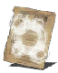

Descrição: Milagre que envolve o corpo em uma barreira mágica. Aumenta a resistência a magia, raio, fogo e escuridão.
Dizem que este milagre protegia seu conjurador com a armadura da Rocha, e que era comum entre os cavaleiros magos de Mirrah.
Localização:
Usos: 2
